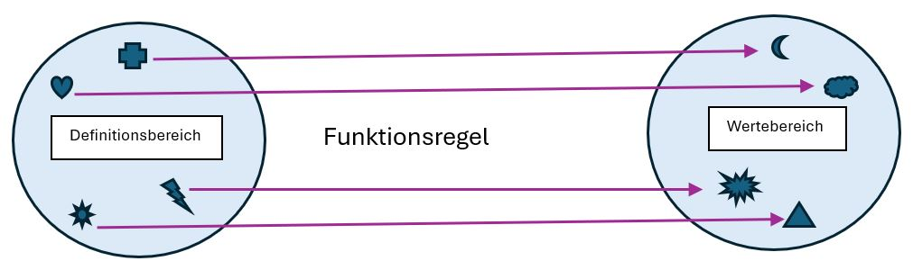

Funktionen
Einführung ins Konzept
Zwei Doppellektionen für die Einführung und Übung von Funktionen als Input-Output-Modell wobei entweder Input oder Output bekannt ist.
Lektion 1
Organisation
| Zeitangabe | Aufgabe SuS | Aufgabe LP | LUKAS | Methode |
|---|---|---|---|---|
| 5 min | Materialien bereitlegen | Begrüssung, Ankündigung neues Thema | Ankommen | Frontalunterricht |
| 15 min | Aufmerksam zuhören, Fragen stellen bei Unklarheiten. Beispiele notieren und gemeinsam lösen. | Einführung Funktionen Teil 1 mit Skript als Orientierung. Mehrere Beispiele werden an der Wandtafel gezeigt, Begriffe werden erklärt. Zugriff zum Skript erst am Ende der Erklärung. | Konfrontation | An der Wandtafel und Beamer, Frontalunterricht |
| 10 min | Durchlesen des Skripts. Teil 1. Unklarheiten mit LP klären, Wichtige Begriffe markieren | Zugriff zum Skript erteilen. Fragen der SuS klären. | Erarbeitungsaufgabe | Skript online hochladen, SuS machen Einzelarbeit beim Durchlesen, Fragen mit LP oder mit Nachbar*in klären. |
| 15 min | Aufgaben 1-4 lösen | Bereit für Fragen, allenfalls erneute Erklärungen an der Wandtafel. | Übungsaufgabe | Aufgaben können in Einzel- oder Partnerarbeit gelöst werden. Entweder direktes Lösen auf dem Tablet oder Übersetzen auf Papier. |
Skript
Skript Einführung Funktionen Teil 1 Was ist eine Funktion?
Die Funktion ist eines der wichtigsten «Objekte» der Mathematik. In der Biologie oder im Physik werden sie oftmals auch als Regeln, Gesetze oder Formeln bezeichnet. Wir stellen uns Funktionen in der Mathematik als kleine Maschinen vor. In diese Maschine wird ein Input gegeben, dieser wird dann nach einer genauen Regel verarbeitet und als neuer Output wieder aus der Maschine gegeben. MA.3.A.1.m
Eine Funktion wird üblicherweise mit dem Symbol f bezeichnet. Wobei der Input mit einem x und der Output mit einem y
gekennzeichnet wird. Sind aber mehrere verschiedene Funktionen vorhanden, werden diese mit weiteren Buchstaben bezeichnet.
Hängen wir diese Informationen nun zusammen, erhalten wir eine Maschine:
\[\begin{align*} \text{Input: } & x \\ & \downarrow \\ & \boxed{g} \quad \text{Regel: } g(x) = x^2 \\ & \downarrow \\ \text{Output: } & y \end{align*}\]
Der Input wird also in die Maschine gegeben, wird dann in der Maschine verändert und kommt als neuer Output wieder heraus. Die Regel dieser Funktion lautet x+3 . Das heisst, addiere den Input mit 3. Wenn also der Input 2 ist, so ist der Output 2+3=5.
Hier ist eine Maschine \(g\),
die mit einer anderen Regel funktioniert.
\[\begin{align*} \text{Input: } & x \\ & \downarrow \\ & \boxed{g} \quad \text{Regel: } g(x) = x^2 \\ & \downarrow \\ \text{Output: } & y \end{align*}\]
Bei dieser Funktion wird der Inhalt quadriert. Wenn also \(x = 4\), so ist \(y\), oder der Output, \(4 \cdot 4 = 16\).
Nun gibt es verschiedene Notationen, wie man eine Funktion ohne die Maschine beschreiben kann. Wir werden uns mit der meistgebrauchten Notation beschäftigen.
Diese sieht folgendermassen aus: \(ƒ(x)\) = Regel der Funktion.
Damit die Funktion berechnet werden kann, wird das \(x\) definiert, sodass man den \(y\)-Wert finden kann. Andererseits kann man auch den \(y\)-Wert definieren und so mit Hilfe der Funktionsregel auf den \(x\)-Wert schliessen.
Wenn wir nun unsere Maschinen von oben betrachten, sehen diese mit der Notation so aus:
\[ f(x) = x + 3 \]
\[ g(x) = x^2 \]
Löse Aufgaben 1 & 2 (Grundanforderung)
Aufgabe 3: obligatorisch für Sek und Spez-Sek, freiwillig für Real
Aufgabe 4: obligatorisch für Spez-Sek, freiwillig für Sek und Real
Teil 2 Eigenschaften von Funktionen: Welche Gleichung ist keine Funktion?
Für eine Funktion kann nicht einfach eine willkürliche Gleichung gewählt werden. Es gibt gewisse Regeln, die beachtet werden müssen. Um diese etwas anschaulicher zu gestalten, benutzen wir dazu die Mengen.
Jede Funktion besteht aus 2 Mengen. Diese Mengen werden als Definitionsbereich und als Wertebereich bezeichnet.
Der Definitionsbereich einer Funktion gibt an welche Werte man in die Funktion einsetzen darf. Er beschreibt also alle Inputs oder x-Werte.
Der Wertebereich beschreibt alle möglichen Ergebnisse, die aus der Maschine ausgespuckt werden können. Es sind also die Outputs oder y-Werte einer Funktion. Die Zahlen des Wertebereichs entstehen also durch die Zahlen des Definitionsbereichs.
Damit eine Funktion nun gültig ist, kann jeder Input nur einen einzigen Output besitzen. Das bedeutet jedem Element im Definitionsbereich wird genau 1 Element im Wertebereich zugeteilt. Sobald die Gleichung mehrere Lösungen hat, ist es keine Funktionsgleichung.
Lasst uns das in einem Bild veranschaulichen:

Wie man sehen kann, verändern sich die Formen oder auch Zahlen durch die Funktionsregeln, jedoch wird jedem Input genau 1 Output zugestellt. Somit sind die Funktionen gültig.
Ist die folgende Gleichung eine Funktionsgleichung? Begründe:
\[ f(2) = x^2 - 4 \]
Ebenso wird die Gleichung nicht als gültig anerkannt, wenn sie kein Ergebnis ausspuckt.
Ein Beispiel für eine Gleichung mit ungültigem Output ist:
\[ f(3) = \frac{1}{x - 3} \]
Diese Gleichung ist ungültig, da die Division durch Null nicht erlaubt ist. Die Gleichung hat also keinen gültigen Output.
MA.3.B.1.i
Löse Aufgaben 5-9. Aufgabe 9 = freiwillige Erweiterung.
Wichtige Erkenntnisse und Begriffe:
- Eine Funktion kann als kleine Maschine betrachtet werden.
- Eine Funktion wird mit dem Symbol ƒ bezeichnet.
- Input = x-Wert der Funktion.
- Output = y-Wert der Funktion.
- Jede Funktion besitzt eine Regel, nach der der Output berechnet wird.
- \[ ƒ(x) \] = Regel der Funktion ist die Notation einer Funktion.
- Der Definitionsbereich beschreibt die Inputs.
- Der Wertebereich beschreibt die Outputs.
Wenn du noch eine zusätzliche Erklärung zum Thema Funktionen brauchst, kannst du gerne noch das Video unter folgendem Link anschauen:
Video zur Erklärung der Funktionen
Achtung: Hier werden bereits die Funktionsgraphen erklärt, welche wir uns in einem nächsten Schritt anschauen. Du darfst dich aber gerne schon darüber informieren.
Lektion 2
| Zeitangabe | Aufgabe SuS | Aufgabe LP | LUKAS | Methode |
|---|---|---|---|---|
| 15 min | Zuhören, Fragen stellen bei Unklarheiten | Einführung des 2. Teils (Mengen). Unklarheiten wiederholen, Begriffe erklären mit Beispielen (Erklärung mit Menge = Beispiel 1 bei Beispielen einer Funktion von Serlo als Hilfe) | Konfrontation und Reflexion | Frontalunterricht, Wandtafel und Beamer |
| 20 min | Aufgaben 5-9 lösen. Bei Unklarheiten LP fragen oder verlinkte Videos anschauen. | SuS unterstützen beim Lösen der Aufgaben. Allenfalls Aufgaben im Plenum erklären. Einige schwierigere Aufgaben im Frontalunterricht lösen, falls erwünscht von den SuS. | Übungs- und Vertiefungsaufgaben | Einzel- oder Partnerarbeit. SuS arbeiten am Platz mit Tablets. |
| 10 min | Letzter Teil: Wichtige Begriffe und Erkenntnisse durchlesen. Unklarheiten melden. | Wiederholung der wichtigen Begriffe und Erkenntnisse. Schwierige Aufgaben besprechen und gemeinsam lösen. Allenfalls von SuS erklären lassen. | Reflexion und Synthese | Zuerst Einzelarbeit beim Lesen, danach Besprechung und Klärung im Frontalunterricht |
Übungen Funktionsgleichungen
Übungsaufgabe 1 Finde den y-Wert
Übungsaufgabe 2 Erstelle eine Funktionsgleichung mit
- \(x = 2\)
- \(x = −2\)
- \(x = 16\)
- \(x = 1.5\)
- \(x = 12\)
- \(x = 7 − 4 / 2\)
Übungsaufgabe 3 Betrachte die folgenden, mit Worten beschriebenen Funktionen. Zeichne für jede Funktion die Maschinen-Darstellung und schreibe auch die Funktionsgleichung auf. (MA.1.A.4.j)
- Der Input wird durch 2 geteilt, und das Ergebnis wird um 1 erhöht.
- Der Input wird um 2.5 vermindert, und das Ergebnis wird mit 10 multipliziert.
- Der Input wird hoch drei gerechnet, und das Ergebnis wird mit 2 multipliziert.
- Der Input wird mit 3 multipliziert, das Ergebnis wird hoch drei gerechnet.
Übungsaufgabe 4 Bestimme den Input für den gegebenen Output
\[\begin{align*} x & = ? \\ & \downarrow \\ & \left\lceil f \right\rceil \quad \text{Regel: } f(x) = 3x - 1 \\ & \downarrow \\ y & = 0 \end{align*}\]
\[\begin{align*} x & = ? \\ & \downarrow \\ & \left\lceil f \right\rceil \quad \text{Regel: } f(x) = 2x \\ & \downarrow \\ y & = 36 \end{align*}\]
\[\begin{align*} x & = ? \\ & \downarrow \\ & \left\lceil f \right\rceil \quad \text{Regel: } f(x) = (x - 1)^2 \\ & \downarrow \\ y & = 16 \end{align*}\]
\[\begin{align*} x & = ? \\ & \downarrow \\ &\left\lceil f \right\rceil \quad \text{Regel: } f(x) = \frac{1}{x} \\ & \downarrow \\ y & = 0 \end{align*}\]
Übungsaufgabe 5 f ist die Funktion, die jeder Frucht in der Menge die richtige Farbe zuordnet.
Zeichne die Mengen des Definitionsbereichs und des Wertebereichs. Verbinde die Elemente durch Pfeile (wie im Skript) und notiere die Funktionsgleichungen für:
- Apfel
- Banane
- Birne
- Mango
- Pflaume
- Tomate
Funktionsgleichungen können auch im Alltag nützlich sein. Schauen wir uns eine solche Situation etwas genauer an. (MA.3.C.3.g)
Übungsaufgabe 6 Die Fahrzeit berechnen mit Hilfe einer Funktionsgleichung
Für die Berechnung der Fahrzeit benötigen wir 2 verschiedene Angaben:
- Die Strecke
- Die Geschwindigkeit
Für die Strecke benutzen wir den Buchstaben d (distance) mit der Maßeinheit km und für die Geschwindigkeit den Buchstaben v (velocity) mit der Maßeinheit km/h.
Wenn wir nun die Fahrzeit berechnen wollen, benötigen wir die folgende Gleichung:
f(t) = d / v
Die Strecke geteilt durch die Geschwindigkeit ergibt also die Fahrzeit.
Übungsaufgabe 7 Berechne die Fahrzeit. Gib in Minuten an
- t = 120, v = 60
- t = 30, v = 60
- t = 100, v = 80
- t = 70, v = 40
Übungsaufgabe 8 Berechne die Fahrzeit von der Schule zu deinem Zuhause und an deinen Lieblings-Ferienort mit
- v = 80
- v = 120
Übungsaufgabe 9 Berechne die Fahrzeit für die Strecke zum Ferienort, wenn du 1/3 der Strecke 30 km/h fährst, 1/3 der Strecke 80 km/h fährst und 1/3 der Strecke 100 km/h fährst.
Lehrpersonenkommentar
Die Funktionen spielen eine sehr wichtige Rolle in der Mathematik. Deshalb möchte ich für die Einführung in dieses neue Thema zwei Lektionen beanspruchen. Mein Skript, das die Basis für diese Lektionen bildet, beschäftigt sich vorwiegend mit Funktionsgleichungen und Begriffserklärungen. Die SuS lernen einen neuen mathematischen Begriff, die Funktion, sowie eine neue Notation kennen. Damit das Thema verständlicher wird, rate ich den SuS im ersten Teil des Skripts, sich Funktionen als kleine Maschinen vorzustellen. Dabei lernen sie bildlich, was eine Funktion ist und wie diese funktioniert.
Im zweiten Teil des Skripts werden Funktionen anhand von Mengen veranschaulicht. Die SuS lernen dadurch zwei verschiedene Varianten kennen, wie man Funktionen darstellen kann. Diese Vergleiche sollen ihnen helfen, die folgende mathematische Gleichungen besser zu verstehen. Der Fokus dieses Skripts liegt ausführlich auf den Funktionsgleichungen. Alternativ könnte man auch mit dem Graphen einer Funktion beginnen und anhand dessen auf die Gleichung schliessen. Ich halte es jedoch für sinnvoller, zuerst zu verstehen, was eine Funktion ist und wie man sie korrekt notiert, bevor man sich mit den Arten von Funktionen und somit ihren Graphen beschäftigt. Ich fokussiere mich deshalb auf die Gleichungen und würde dann in einer nächsten Lektion mit dem Graph einer Funktion fortfahren.
Nach dem ersten Teil des Skripts habe ich einige Übungen eingebaut. Diese sind darauf ausgelegt, die SuS so intensiv wie möglich mit den Gleichungen zu konfrontieren. Es gibt Aufgaben, bei denen sie die Gleichung lösen müssen, und andere, bei denen sie die Funktionsgleichung selbst formulieren sollen. Dadurch erhalten sie einen differenzierten Überblick über das neue Thema.
Auch nach dem zweiten Teil gibt es verschiedene Aufgaben. Die erste ist auf die Anwendung der Mengentheorie ausgelegt und beim Rest liegt der Fokus dann wieder beim Lösen von Funktionsgleichungen. Auch habe ich ein alltagsnahes Beispiel eingefügt, um das Thema den SuS etwas näher zu bringen.
In diesen Lektionen liegt der Fokus auf dem neuen Thema der Funktion. Deshalb sollten der erste und zweite Teil des Skripts zu Beginn der Lektionen frontal eingeführt werden. So haben alle SuS die neuen Informationen einmal gehört und es können bereits einige Beispiele gemeinsam bearbeitet werden. Das Skript wird den SuS aber auch nach der Einführung zugänglich sein, damit sie die Informationen zur Ergebnissicherung noch einmal nachlesen können. Erst danach sollten sie mit den Übungen beginnen. Als kleine “Auszeit” oder zusätzliche Hilfe habe ich auch Videos eingebaut, um eine alternative Lernstrategie anzubieten. Mir ist bewusst, dass dieser Lektionsablauf eher altmodisch ist und man heute einen interaktiveren Unterricht planen sollte. Dennoch bin ich überzeugt, dass es sich gerade bei der Einführung von neune Themen sehr lohnt, wenn man sie bewusst im Frontalunterricht behandelt.
Unterrichtsmethoden
Um das Thema der Funktionen verständlicher zu machen, setze ich auf eine Kombination von Unterrichtsmethoden. Zu Beginn der beiden Lektionen führe ich das Thema frontal ein. Dabei wird den SuS das neue Thema der Funktionen erklärt. Im ersten Teil gehe ich vor allem auf die Notation und den Aufbau einer Funktion ein. In der zweiten Lektion wird das Thema gewissermassen wiederholt, allerdings werden die Funktionen nun auf eine andere Art und Weise dargestellt. Durch den Frontalunterricht erkenne ich in der zweiten Lektion direkt, was die SuS noch nicht verstanden haben. Die klare Einführung stellt sicher, dass alle SuS mit den neuen Grundbegriffen arbeiten können. Gerade bei neuen Themen ist es sinnvoll, den Frontalunterricht anzuwenden, da so alle SuS gleichzeitig auf denselben Wissensstand gebracht werden. Anschließend kann in einer weiteren Unterrichtssequenz auf lernschwächere oder sehr leistungsstarke SuS individuell eingegangen werden.
Nach dem Einstieg folgt eine Phase der Einzelarbeit. Die SuS sollen das gerade Gelernte noch einmal durchlesen, um die Informationen besser zu verinnerlichen. Sobald dies geschehen ist, können sie beim Lösen der Aufgaben zwischen Einzel- und Partnerarbeit wählen.
Durch die Partnerarbeit haben die SuS die Möglichkeit, sich gegenseitig zu unterstützen. Das kooperative Lernen fördert sowohl das Verständnis des Themas als auch ihre sozialen Kompetenzen. Außerdem haben sie durch diese Methode die Gelegenheit, Fragen an die Lehrperson oder ihre Peers zu stellen.
Das Austeilen des Skripts ermöglicht es den SuS, individuell an den Aufgaben zu arbeiten. Sie können dies in ihrem eigenen Tempo tun und dabei jederzeit die Regeln der Funktionen nachlesen, falls etwas unklar ist. In diesen Phasen kann ich die SuS individuell unterstützen.
Unterrichtstechniken Einführung Funktionen
Bei jedem neuen Thema in der Mathematik fragt man sich, wie es für die Schülerinnen und Schüler am besten verständlich wird. Bei den Funktionen habe ich mich deshalb für eine visuelle Darstellung und den Einsatz von Metaphern entschieden. Das Konzept der Funktionsgleichung vergleiche ich mit einer kleinen Maschine, die einen Input und einen Output verarbeitet. Diese bildhafte Beschreibung hilft den Lernenden, eine Verbindung zwischen dem abstrakten Thema der Funktion und der Realität herzustellen. Zudem führe ich die mathematische Notation schrittweise ein. Zunächst arbeite ich mit der visuellen Metapher der Maschine, bevor ich zur mathematischen Notation übergehe. Ebenso wie die Maschine helfen auch Mengen, das Thema zu visualisieren. Da die Schülerinnen und Schüler bereits mit Mengen vertraut sind, lassen sich einfache Alltagsbeispiele nutzen, um das Thema verständlicher zu machen. Hier arbeite ich mit Symbolen oder in den Übungen dann auch mit Früchten. Ich verpacke also die symbolische Sprache der Mathematik in greifbare Beispiele. Ein weiterer wesentlicher Bestandteil meiner Lernumgebung sind die anschließenden Übungen, die ich nach jedem Theorieteil einfüge. Diese Aufgaben basieren direkt auf den Beispielen aus dem Skript, sodass die Lernenden das neue Wissen sofort anwenden können. Ich habe die Aufgaben in Grundanforderungen und Erweiterungen unterteilt, damit alle ein grundlegendes Verständnis erwerben, aber auch die Möglichkeit haben, selbstständig weiterzuarbeiten und ihr Verständnis zu überprüfen. Im Allgemeinen folgt meine Lernumgebung einer klaren und verständlichen Struktur. Sie beginnt mit dem theoretischen Teil, gefolgt von darauf aufbauenden Aufgaben. Was den Schülerinnen und Schülern hilft, ihr Wissen systematisch zu vertiefen.
Vertiefung 1: Lernphasen
Mit dem LUKAS Lernprozessmodell wird diese Lernumgebung in 5 Phasen unterteilt.
Zu Beginn der Lektion wird der Klasse der Lernauftrag klar vermittelt. Durch den Frontalunterricht erkläre ich das neue Thema der Funktionen. Die SuS haben somit eine erste Vorstellung der Funktion, deren mathematischen Notation und sie lernen eine neue Gleichungsart kennen. Ich biete der Klasse also eine klare Orientierung, was sie lernen sollen und warum das Thema wichtig ist. Folglich wissen die Schülerinnen und Schüler von Anfang an, welche Lernziele sie erreichen sollen.
In der darauffolgenden Phase befinden wir uns im Bereich der Erarbeitung. Die Klasse setzt sich also nach dem theoretischen Input mit dem eben gelernten Stoff auseinander. Sie werden zunächst aufgefordert, das Gelernte noch einmal zu vertiefen, indem sie es in Einzelarbeit durchlesen. Danach können sie selbst entscheiden, ob sie die Übungen alleine oder zu zweit erarbeiten wollen.
Die Dritte Phase, das Können, wird durch das Lösen der Übungen gestärkt. Die SuS wenden die neuen Erkenntnisse an, indem sie die Funktionsgleichungen lösen und auch selbständig aufstellen. Die Aufgaben helfen den SuS ihr Verständnis über das Thema zu stärken und gleichzeitig werden sie routinierter im Umgang mit Funktionsgleichungen. Hierbei haben sie die Möglichkeit in ihrem eigenen Tempo zu arbeiten, was eine individuelle Differenzierung fördert.
Die Anwendungsphase ist in dieser Lernumgebung in den letzten Aufgaben zu finden. Mit Hilfe des Alltagsbeispiels lernen die SuS, die neuen Informationen auf lebensnahe Kontexte zu übertragen. Dabei vertiefen sie ihr Verständnis und kennen zugleich ein Beispiel für die Relevanz der mathematischen Funktion im Alltag.
In der letzten Phase findet die Sicherung des Gelernten statt. Dafür fasse ich die wichtigsten Begriffe des Themas am Ende des Skripts noch einmal zusammen. Diese Aufzählung dient als Checkliste für die Schülerinnen und Schüler, falls sie eine Begriff nicht mehr definieren können. Auch dient sie als Anhaltspunkt für die Lehrperson beim Überprüfen, welche Konzepte noch nicht erfasst werden konnten.
Vertiefung 2: Motivation
Die Motivation der Schülerinnen und Schüler spielt in jeder Lernumgebung eine zentrale Rolle. In den Mathematikunterricht der Oberstufe kommen viele SuS leider bereits mit negativen Erfahrungen oder sogar Ängsten daher. Deshalb ist es umso wichtiger, ihre Motivation anzuzapfen und stetig aufzubauen.
In dieser Lernumgebung setze ich deshalb auf eine klare Struktur und verständliche Aufgabenstellungen, um die Ängste der SuS zu minimieren. Die frontale Einführung gibt ihnen eine solide Grundlage, auf der sie im weiteren Verlauf der Lektion aufbauen können. Falls der Einstieg für manche zu schnell war oder sich einzelne SuS nicht genug konzentrieren konnten, stellt das Skript einen weiteren Meilenstein dar. Es bietet ihnen die Möglichkeit, immer wieder auf die Theorie zurückzugreifen, falls sie auf Schwierigkeiten stossen. Zusätzlich steht ihnen ein unterstützendes Video zur Verfügung. Dieses Video ist nicht offizieller Teil der Lernumgebung, dient jedoch als zusätzliche differenzierte Hilfe. Sobald die SuS das neue Thema verstanden haben, steigt auch ihre Motivation. Denn am wenigsten motiviert ist man, wenn man einen Themenbereich nicht nachvollziehen kann. Durch verschiedene Unterrichtsmethoden und gezielt eingesetzte Techniken wird die Motivation der SuS weiter gestärkt. Sie haben die Freiheit, ihr Lerntempo selbst zu gestalten und können zwischen Einzelarbeit und kooperativem Lernen wählen. Bildhafte Darstellungen und Metaphern helfen ebenfalls, mögliche Hemmungen abzubauen und das Thema zugänglicher zu machen. Ein weiterer wichtiger Punkt ist das Einbeziehen von Alltagsbeispielen. Diese helfen den SuS, die Relevanz komplexer mathematischer Themen in ihrem täglichen Leben zu erkennen, sodass das Thema nicht als „unnötig“ wahrgenommen wird. Zusammenfassend tragen alle diese Faktoren dazu bei, dass die Schülerinnen und Schüler Interesse am Thema entwickeln, ihre Aufgaben motiviert angehen und das Gelernte langfristig festigen.